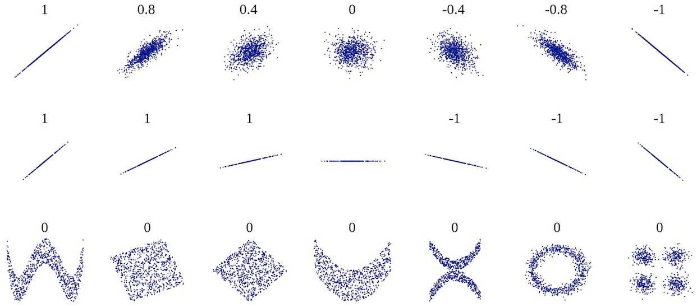

summarizes the strength of its relationship in a single number
exposes linear relationship or the lack of it

Several sets (x, y) of points, with the Pearson correlation coefficienr of x and y for each set. Note that the correlation reflects the noisiness and direction of a linear relationship (top row), but not the slope of the relationship (middle), nor many aspects of nonlinear relationships (bottom). N.B.: the figure in the center has a slope of 0 but in that case the correlation coefficient is undefined because the variance of Y is zero.